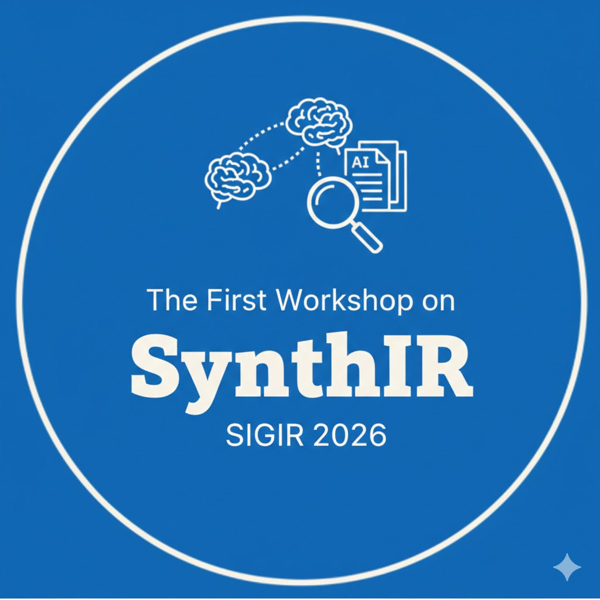

SIGIR 2026
Special Interest Group on Information Retrieval
SIGIR 2026 (https://sigir.org/)
Workshop on
SynthIR: The First Workshop on Synthetic Content in Information Retrieval Ecosystems (SIGIR 2026)
SynthIR focuses on the system-level implications of AI-generated content in retrieval ecosystems, emphasizing evaluation validity, provenance, user trust, and human-centered design in mixed (synthetic + human-authored) information environments.
News
Important Dates
Please note: deadlines are at 11:59 p.m. Anywhere on Earth.
- Submission deadline: 7 April 2026
- Notification: 22 April 2026
- Camera-ready: 29 April 2026
Abstract
The proliferation of AI-generated content is fundamentally altering the information ecosystems in which retrieval systems operate. Search engines, recommender systems, and retrieval-augmented generation pipelines increasingly function in mixed environments where synthetic and human-authored content are tightly interwoven, raising system-level challenges for information retrieval. SynthIR provides a forum to examine these implications with emphasis on reflection, evaluation, and human-centered system design, and to foster community discussion that may inform future evaluation efforts and shared tasks.
Themes and Discussion Tasks
Focus areas include evaluation validity, provenance/attribution, grounding and trust signals, and user interaction in AIGC-aware IR systems.
Micro shared tasks (lightweight analytical exercises):
- Task A: AIGC in ranked retrieval results — ranking placement, perceived quality, provenance signals, and evaluation gaps.
- Task B: AIGC in retrieval-augmented generation (RAG) — factual alignment, attribution quality, hallucination patterns, and trust signals.
- Task C: Model provenance and attribution — provenance availability, attribution granularity, uncertainty representation, and impact on ranking/trust.
- Case study: sequential AIGC edits and provenance challenges in IR.
Submission
We invite short analysis notes or position statements aligned with the tasks above. Submissions should emphasize analytical insights and open questions rather than extensive system building.
- Format: short written submission (analysis note / position statement)
- Scope: evaluation, trust, provenance, and human-centered implications of synthetic content in IR
- Review: relevance, clarity, and potential to stimulate discussion
Workshop Format and Tentative Schedule
SynthIR is planned as a highly interactive half-day workshop, structured to move from shared context setting to task-driven analysis and participant-driven discussion.
| Time | Agenda |
|---|---|
| 09:00–09:10 | Welcome and framing of workshop goals |
| 09:10–09:50 | Keynote and moderated discussion |
| 09:50–10:40 | Panel discussion with audience interaction |
| 10:40–11:00 | Break |
| 11:00–12:15 | Thematic discussion sessions and informal exchange |
| 12:15–12:45 | Synthesis of discussion outcomes and closing remarks |
Organizing Team
 |
 |
 |
 |
|
|---|---|---|---|---|
| Ping Liu, University of Nevada, USA | Zhedong Zheng, University of Macau, China | J. Shane Culpepper, University of Queensland, Australia | Xin Yu, Adelaide University, Australia |
Contact
For questions, please contact the organizers. (Replace this line with your preferred contact email / form.)
Workshop Citation
@inproceedings{SynthIR2026,
title = {SynthIR: Workshop on Synthetic Content in Information Retrieval Ecosystems},
booktitle = {Proceedings of the 49th International ACM SIGIR Conference on Research and Development in Information Retrieval (SIGIR 2026) Workshops},
year = {2026}
}